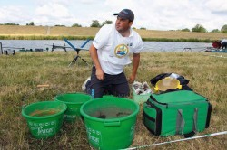
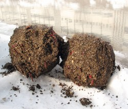
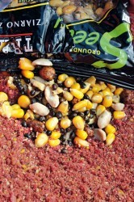
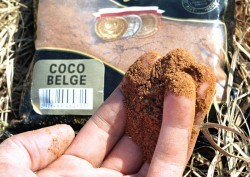
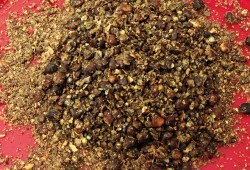
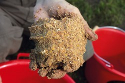
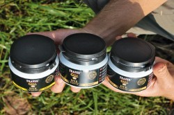
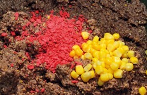

ПРИКАРМЛИВАНИЕ. ЭТО ПОЛЕЗНО ЗНАТЬ
То, что недавно многим рыболовам-поплавочникам было в диковинку, сегодня мало кого удивляет. Но есть темы, споры по котором все не затихают, и есть (и продолжают возникать) такие нюансы в этой области, которые сегодня известны в основном только в спортивных кругах, хотя никто секретов из них не делает. Просто нужно время, чтобы все это стало достоянием рыболовов-любителей.
Постараюсь ответить на некоторые наиболее часто задаваемые вопросы и обобщить информацию о прикормках, которая может оказаться весьма полезной тем, кто этой темой и ее новинками интересуется.
Кормить помногу или помалу?
Можно ли перекормить? «Нет, – считают некоторые продавцы прикормки, – сколько не сыпь в воду – рыба все съест». Не удивительно ли, что обычно это утверждают продавцы прикормки? 
А вот по моему опыту, перекормить иногда все-таки получается. Приходилось с этим сталкиваться и на соревнованиях, и на любительских рыбалках.
Тому, кто не верит, предлагаю провести эксперимент, хотя он довольно накладен: попробуйте на зимней рыбалке высыпать в лунку 10-15 л прикормки с мотылем и опарышем. Не нужно быть экспертом и прорицателем, чтобы предугадать отсутствие поклевок на этой лунке в ближайшие дни.
По открытой воде бывает, что сразу после массированного прикармливания поклевки следуют одна за одной, а через 10-20 минут клев сходит на нет. И никакое докармливание не помогает. Чаще всего это свидетельствует как раз о том, что рыба переела и потеряла интерес к насадке.
Сколько именно прикормки бросать в воду? Ответ зависит от нескольких факторов – силы течения, вида рыбы, времени года, наличия конкурентов на берегу и, наконец, специфики конкретного водоема. Есть малорыбные водоемы, где ни при каких условиях нельзя обильно прикармливать.
Понятно, что зимой следует использовать меньше прикормки, чем летом. Объясняется это тем, что температура воды влияет на скорость обмена веществ у рыб. Чем вода теплее – тем быстрее рыба усваивает пищу и тем меньше риск ее перекормить.
Летом «накрывать богатый стол» лучше на стоячих водоемах, густонаселенных рыбой. На реках и каналах с быстрым течением большие объемы прикормки могут улучшить клев в определенных случаях. Быстрое течение все время размывает упавшие на дно шары, и когда на точку подходит стая активной речной рыбы, корма может не хватить для того, чтобы ее задержать. В результате клев затихает так же внезапно, как начался.
Внушительные объемы прикормок нужны на соревнованиях. Тут уж выбора нет: поскупившись, можно отпустить рыбу в соседний сектор, где кормовой стол накрыт более щедро, а самому остаться без улова. Если же ловить на этом же водоеме в одиночку, да к тому же в стоячей воде, то можно обойтись куда меньшими объемами прикормки.
Что касается того, как прикармливание зависит от вида рыб, то большие объемы съестного абсолютно не нужны, например, для уклейки. Там важна частота докорма. А вот при ловле язя, голавля, леща, сазана и прочей крупной речной рыбы скупиться не нужно.
Сытно или скудно?
При выборе той или иной прикормочной смеси нужно непременно учитывать ее питательность, которую нельзя путать с объемом! Ведро прикормки, основа которой – грунт, не насытит рыбу так, как это сделает всего одна пригоршня классической карповой смеси.
Вообще чем выше концентрация рыбы, чем она активнее и крупнее, тем более сытным должно быть наше угощение. Бедная прикормка просто не удержит такую рыбу в точке ловли, особенно по теплой воде.
И напротив, если объект ловли – единичные мелкие подлещики и плотва, да еще и вода холодная, тогда чересчур сытная прикормка просто «выключит» клев.
Разные прикормки изначально имеют разную питательность. Лещовые и в особенности карповые смеси делаются максимально калорийными, иначе рыба быстро потеряет к ним интерес.
Сделать прикормку более сытной можно, добавляя в нее различные хлебные гранулы, бисквиты, печенье, и, конечно, живой корм. При ловле карпа и крупного леща отличный эффект дает кукурузный жмых, а также зерновые смеси Ziarno zanеtowe – Mix, куда входит тигровый орех, очищенный ячмень, конопля, кокосовая стружка, сладкая кукуруза, зерна сорго и чечевицы.
Понизить пищевую ценность прикормки можно за счет отрубей, дробленой кукурузы и кокосового жмыха Coco-belge. Но максимально обедняет растительную смесь, конечно же, добавка грунта, поэтому большинство рецептов для пассивной рыбы или для ловли в холодной воде включают в себя различные виды глины.
Пластилиновая прикормка?
Время распада прикормочного шарика – важнейший аспект в работе прикормки. В каждой конкретной рыболовной ситуации существует своя оптимальная степень клейкости растительной смеси. У новичков частая ошибка – использование более клейкой прикормки, чем того требуют условия ловли.
Логика должна быть такая: для реки – липкая прикормка, для озера – более рассыпчатая. Из этого правила есть немало исключений. Нужно учитывать, в каком горизонте вы хотите ловить. Например, для верховой рыбы даже на реке используются рассыпчатые смеси, тогда как для избирательной донной ловли в стоячей воде иногда применяются составы, приближающиеся по клейкости к речным.
Самые рассыпчатые прикормки разбиваются уже при ударе о воду. Они используются в основном для ловли уклейки. Однако они же могут собирать и крупную рыбу (карпа, амура) во время термоклина. Правда, это бывает лишь в тех случаях, когда водоем не страдает от засилья мелкой рыбы.
Шары, слепленные из классических озерных прикормок, могут распадаться в толще воды, а могут и на дне – смотря как их приготовить.
Для ловли со дна смесь должна быть достаточно плотной. Шар из такой прикормки может распадаться 5-15 минут, а то и больше. Наиболее тяжелыми и клейкими должны быть те прикормки, которые надо удержать в определенной точке на сильном течении. Но они все равно должны постепенно распадаться! Прикормка, имеющая консистенцию пластилина, работать вообще никак не будет.
Свои поправки вносит ловля на свале в глубину под углом более 20O. Тут круглый шарик прикормки может просто укатиться вниз. Приходится искать компромисс: делать прикормку более рыхлой, лепить приплюснутые шары и немного не добрасывать их до поплавка.
Целевые прикормки (для определенного вида рыб) обладают условно нейтральной клейкостью. Подразумевается, что рыболов сам дорабатывает прикормку исходя из условий конкретного водоема, делая ее более липкой или рассыпчатой. Вместе с тем, если сравнивать между собой лещовые и плотвиные смеси, то первые всегда более клейкие, чем вторые.
«Зимние» составы обладают пониженной клейкостью. Это делается для того, чтобы смесь ни в коем случае не сбивалась в комки, от которых пассивная рыба могла бы перенасытиться.
Клейкость прикормки можно изменять, добавляя в нее связующие и разрыхляющие компоненты (PV-1, Coco-belge и т.д.).
И самое главное: можно влиять на время распада прикормочного шара, меняя силу, с которой его сжимают при формировании, и степень увлажнения. Один и тот же состав прикормки можно заставить разбиваться о поверхность воды или сделать так, что слепленный шар будет долго лежать на дне. Впрочем, об этом мы еще поговорим.
1) Прикормка для ловли у поверхности и в полводы.
2) Прикормка для ловли на медленно падающую наживку в придонных слоях.
3) Активная прикормка для ловли со дна.
4) Инертная прикормка.
Когда прикормка должна «взрываться»?
Слепите шар прикормки, бросьте его в воду и внимательно следите за происходящим. Вы увидите, как шар начнет постепенно осыпаться. Это произойдет вследствие того, что вода, проникая между частичками прикормки, нарушит связи между ними. Основная масса высвобождаемых частиц опустится на дно, но какая-то их часть, наоборот, поднимется вверх с разной скоростью. Это преимущественно легкие и маслосодержащие частицы, такие как молотые семена конопли, кориандра, всевозможные скорлупки и шелуха, частички, не успевшие пропитаться водой.
Большое число всплывающих частиц свидетельствует о высокой активности прикормки. Если их мало или нет вовсе – значит, прикормка инертная. На что это влияет?
Всплывающие частицы вызывают интерес у рыбы, особенно у плотвы. Даже если поблизости плавает всего несколько особей, очень скоро на их месте может оказаться целая стая. Таким образом «взрывающаяся» прикормка способна расшевелить даже вялую и сытую рыбу.
Казалось бы, вот оно, волшебное средство для улучшения клева. Но не все так просто. Чрезмерно активная прикормка с равным успехом может испортить вам рыбалку, собрав всю мелюзгу в округе, в то время как соседи с инертной прикормкой будут ловить крупную рыбу. Объяснение простое: мелкая рыба более шустрая и смелая, поэтому всегда первая отзывается на «пылящую» прикормку. Крупные особи не полезут в «давку» – они подождут, пока муть уляжется, и только после этого, может быть, подойдут на точку.
Резюме такое: «порох» работает неотразимо, когда нет нужды селектировать рыбу по размеру. Большинство плотвичных смесей производитель изначально наделяет более высокой активностью, чем, например, лещовые составы. Если же по соседству обитают разнокалиберные рыбы, а вам хочется ловить крупную – тогда правильным решением будет инертная прикормка. Вместе с тем учитывайте, что, используя ее, вы рискуете при вялом клеве вовсе остаться без рыбы.
Активность прикормки можно корректировать самостоятельно. Чтобы прикормка сильнее «пылила», в нее добавляются необжаренная молотая конопля, кориандр и сухой голубиный помет. Для снижения активности добавляются грунт, меласса, настоявшийся голубиный помет.
И еще один момент. Слабо увлажненная смесь, заброшенная в воду сразу после замеса, тут же начинает «взрываться», тогда как переувлажненная и настоявшаяся распадается медленно и спокойно.
Большому куску рот радуется?
Готовая прикормка, как правило, содержит в себе частицы разного размера. Их соотношение определяет назначение прикормки. Самые мелкие частицы в основном играют роль связующего (хотя если говорить о Coco-belge, то это исключительно рыхлитель), а крупные фракции (кусочки спрессованной прикормки, орехов, печенья и т.п.) служат кормовой добавкой.
Понятно, что прикормки с высоким содержанием крупных частиц предназначены для ловли крупной рыбы. Соответственно, для мелкой рыбы оптимальны смеси мелкого помола. К примеру, калорийная прикормка TRAPER Select серии Gold, рассчитанная на карпа, леща и белого амура, содержит в своем составе приблизительно 10% крупных (3-8 мм) частиц, 30% средних (1-3 мм) и 60% мелких (менее 1 мм). Такой состав позволяет в какой-то степени отсечь мелкую рыбу и повышает интерес крупных особей.
В противоположность ей прикормка Explosive, разработанная для ловли уклейки и другой мелкой рыбы, вообще не содержит крупных частиц, да и средних в ней мало.
Таким образом, размер и вид рыбы – это первый фактор, определяющий помол прикормки.
Второй фактор – интенсивность клева. Когда рыбы мало и поклевки осторожные, требуется смесь мелкого помола. Именно по этой причине в так называемых «зимних» прикормках содержание крупных частиц сведено к минимуму – чтобы не перекормить вялую рыбу. Кстати, «зимние» прикормки можно с успехом использовать и по открытой воде, когда рыба пассивна, а также в малорыбных водоемах.
Для многочисленной и активной рыбы крупных частиц в прикормке должно быть много. Это особенно важно в теплое время года, а также для рыбалки на сильном течении.
У рыболовов-спортсменов и любителей тоже есть свои предпочтения при выборе прикормки. Так, для большинства любителей наибольший интерес представляет селективная ловля крупных экземпляров, то есть качество, а не количество. А вот участникам соревнований зачастую приходится ловить «все, что движется», чтобы набрать хороший общий вес улова, поэтому они используют в основном прикормки достаточно мелкого помола. Кроме того, подразумевается, что спортсмены добавляют в прикормки животный корм – мотыля, опарыша, кастеры, рубленого червя и т.д., которые представляют собой те самые недостающие крупные фракции, причем самые «вкусные».
Отдельно следует сказать о гранулированном корме. На некоторых карповых прудах он работает на порядок лучше, нежели прикормка шарами растительной смеси. Происходит это из-за того, что запущенный карп с рождения привыкает к комбикорму, который по сути является примитивной вариацией фирменного гранулята. Вместе с тем гранулы недоступны мелкой верховой рыбе, что делает их лучшей селективной прикормкой.
Знаете ли вы цветоведение?
Несомненно, цвет прикормки может оказывать самое прямое влияние на результативность рыбалки. И чем больше света попадает на дно, тем оно сильнее.
Довольно часто бывает, что рыба пугается контрастного пятна – инстинкт самосохранения заставляет ее маскироваться под цвет окружающей среды, чтобы быть незаметной для хищников. Такое поведение наиболее свойственно плотве. Кроме того, любая рыба избегает контраста в холодной (прозрачной) воде. Исключение – подледная рыбалка, когда свет на дно почти не попадает. Лучшим решением для пугливой рыбы является прикормка черного цвета.
Весной и летом, когда вода начинает прогреваться и мутнеет, ситуация меняется. Зачастую в это время яркая прикормка, наоборот, вызывает интерес у рыбы, особенно у крупных особей, которым не страшны хищники. Учитывая этот факт, можно селектировать рыбу по размеру за счет цвета прикормки.
Рыболовы-спортсмены заметили, что весной наибольшим привлекательным эффектом обладает красная прикормка. Летом лучше всего работает прикормка натурального цвета. Кроме того, замечено, что желтые смеси нравятся карпу, лещу и его близким родственникам.
Можно самостоятельно изменить цвет прикормки с помощью добавок. К примеру, сухари из пшеничного хлеба и кукурузная мука осветляют смесь, тогда как копра-меласса или, скажем, шоколадные пряники затемняют. Кроме того, цвет прикормки меняется, если в нее добавить глины. Удобнее всего, на мой взгляд, пользоваться специальными порошковыми красителями, которые позволяют очень быстро изменить цвет прикормки и ее работу.
Наиболее распространенный способ – добавить сухой краситель к сухой прикормке, а затем смесь увлажнить. В этом случае краситель постепенно вымывается из прикормки, упавшей на дно водоема. Для более стойкой фиксации краску следует добавлять в воду, на которой замешивается прикормка. Так обычно поступают с черным красителем. 
Очень интересный эффект «долгоиграющего облака» можно создать с желтым красителем, что неотразимо действует на подлещика и уклейку. Для этого краску нужно добавить в увлажненную рассыпчатую прикормку перед тем, как лепить шары.
Отличных результатов можно добиться, если использовать прикормку с контрастными частицами. Их роль может выполнять цветной хлеб (особенно хорош флуоресцентный) или, например, консервированная кукуруза.